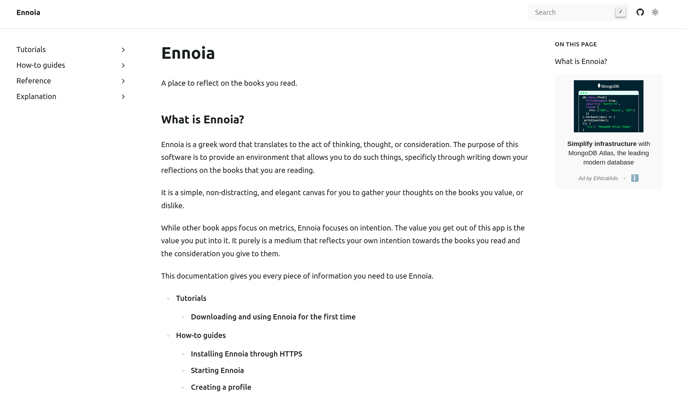
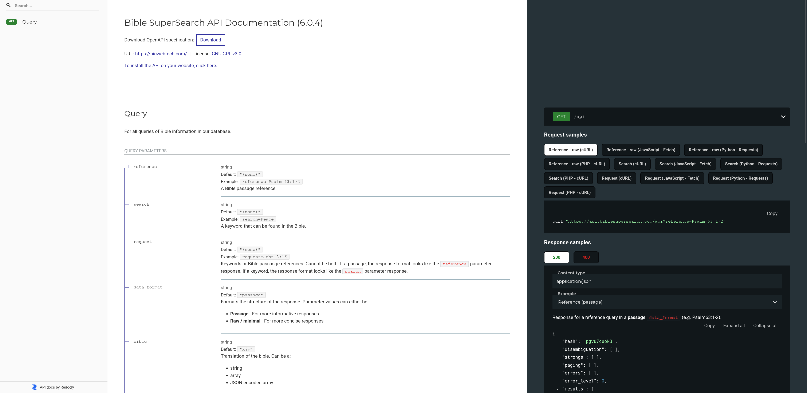

Writing#

Ennoia documentation
Documentation for a book reflection app. Created with Sphinx, reStructuredText, and Read the Docs.

Bible Super Search API documentation
A revision of the API documentation for the Bible Super Search API. Edited to OpenAPI specifications with Redocly CLI.
Setting up a virtual environment in Linux
Setup instructions for a Python virtual environment on a Linux system.
Creating a MadCap Flare notification
Instructions on how to add a MadCap Flare build notification in a target.